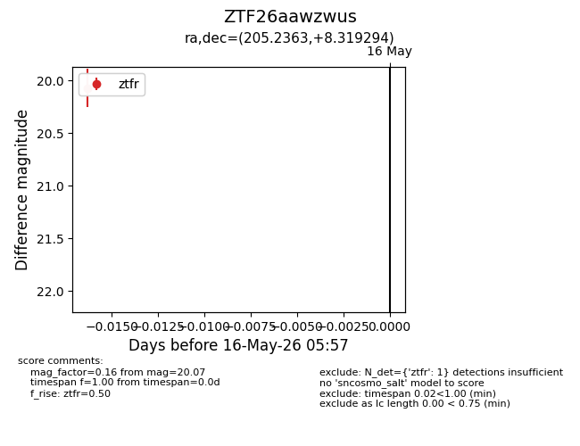
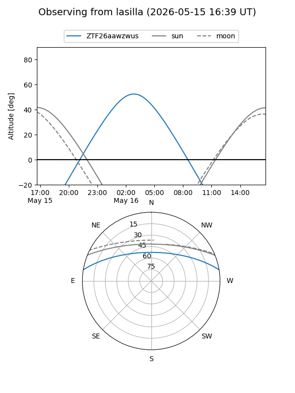
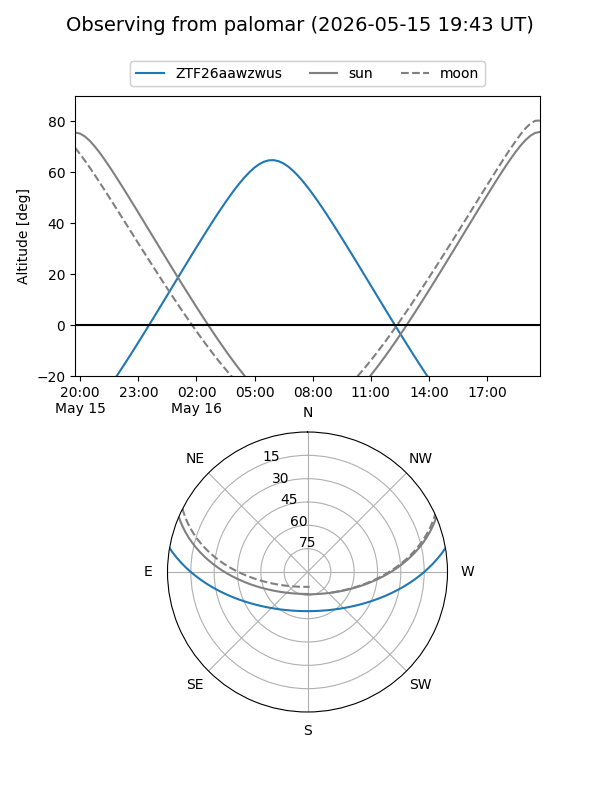

ZTF26aawzwus
Target ZTF26aawzwus at 2026-05-16 05:59
Aliases and brokers:
FINK: link
Lasair: link
ALeRCE: link
alt names
ZTF26aawzwus (ztf,fink_ztf)
Coordinates:
equatorial (ra, dec) = 205.2363,+8.31929
equatorial (HMS+DMS) = 13:40:56.72,+08:19:09.46
galactic (l, b) = (337.1444,+67.83971)
Flags:
Photometry:
last ztfr=20.07
1 ztfr detections
Lightcurve

Visibility


Additional plots